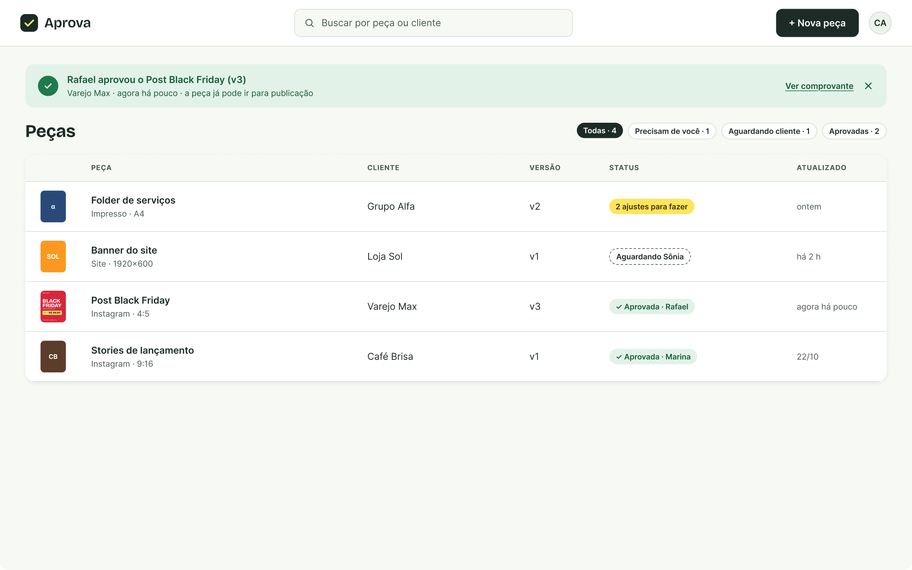
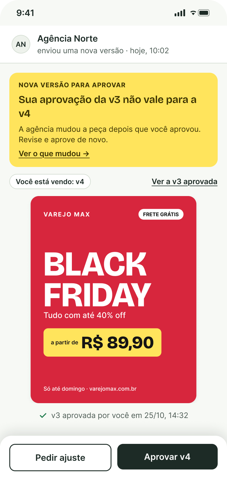
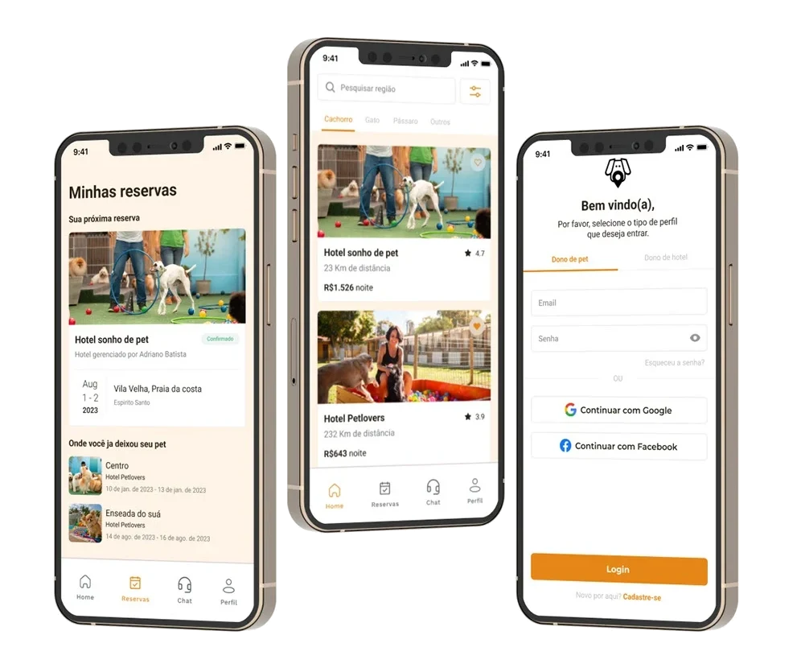
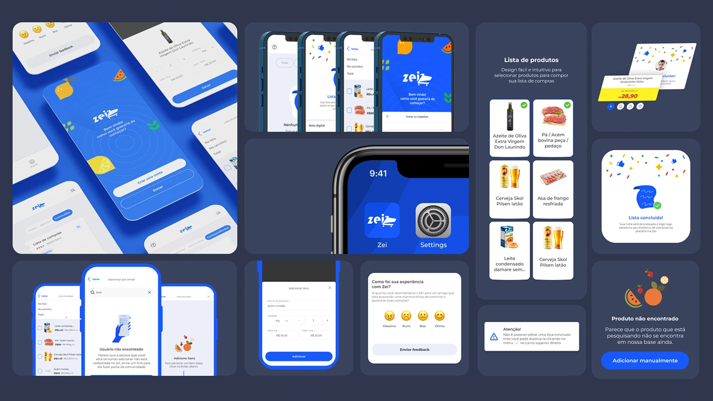

UX/UI · Product Designer · Vitória, Brazil
I understand the problem before designing the solution.
Before designing screens, I research and test with people to find out what really gets in their way. I come from art direction, so I also make sure the result is beautiful and clear.
01 — Case studies
Selected case studies
These are personal and academic projects, done outside my job. The color of the dot shows where each one comes from.
- Independent study done on my own
- University project group work
- Course project team work
g1 · reading to the end


Redesigning news reading on mobile for g1
I measured 13 articles and analyzed 819 reader reviews of g1, one of Brazil's largest news sites. The problem wasn't the number of ads, but how much they interrupt reading.
Read the case studyAprova


An app for agencies and clients to approve creative work
In a test with 5 people, 4 didn't know whether the old approval still counted after the piece changed. I redesigned the notice to make that clear.
Read the case studyPet Hotel

An app to find a pet hotel
Group project. We surveyed 41 pet owners and saw that the problem wasn't finding a hotel, but trusting whoever will look after the pet.
Read the case studyZei

Reviewing a grocery list app
Built as a team in 2024. In 2026 I reviewed it on my own with public data and a competitor analysis, and proposed starting with 3 features instead of 13.
Read the case study02 — About
From art direction to product
I have a degree in Graphic Design from FAESA, in Brazil, and I work as an art director and UI designer at an advertising agency, where I create campaigns and help build landing pages and websites. Before that, I interned in art direction at Artmark.
Digital work is where I found my place. In 2024 I completed the Google UX Design Certificate, and since then I have been doing my own studies, always starting by measuring and listening before designing.
I use AI in my process to save time on measurements and on organizing research. The questions, the analysis and the decisions are mine.
- Now
- Art director and UI designer
- Based in
- Vitória, Brazil · open to remote work
- Education
- Graphic Design, FAESA · Google UX Design Certificate
- Tools
- Figma, Photoshop, Illustrator, After Effects, Claude
03 — Other work
Motion, interaction and branding
Motion, interaction and visual identity projects, on my Behance.
04 — Contact
Let's talk.
I'm open to UX/UI and Product Design roles, including remote ones. Send me a message.